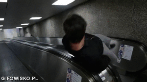

JavaScript jako język powstał na potrzeby firmy Netscape jako LiveScript. W 1995 zmienił nazwę na JavaScript.
JavaScript jest językiem skryptowym czyli interpretowanym, ponieważ nie potrzebuje kompilatora aby zobaczyć efekty jego działania, dlatego można go obsługiwać w przeglądarce.
JavaScript jest bezpieczny ze względu na jego ograniczenia względem zasobów komputera.
JavaScript jest językiem obiektowym ponieważ jest do tego odpowiednio wyposażony.
input type="button" name="przycisk" value="Nowa Strona" onclick="WinOpen_lyzen(' ')"
Linia kodu programująca przycisk
window.open("obraz.html","okienko","toolbar=no,directories=no,menubar=no,height=280,width=160,top=200,left=200");
Linia programująca okienko wyskakakujące po kliknięciu na przycisk
toolbar=no -->wartość yes lub no (1 lub 0): pokazuje lub ukrywa standardowy pasek narzędz
directories=no, -->wartość yes lub no (1 lub 0): pokazuje lub ukrywa przyciski katalogów
menubar=no, -->wartość yes lub no (1 lub 0): pokazuje lub ukrywa menu przeglądarki
height=280, -->wartość w pixelach (1 lub 0): ustawia wysokość okna
width=160, -->wartość w pixelach (1 lub 0): ustawia szerokość okna
top=200, -->- wartość w pixelach : ustawia położenie okna względem góry ekranu
left=200 -->- wartość w pixelach : ustawia położenie okna względem lewej strony ekranu
window.close()
zamyka okienko
